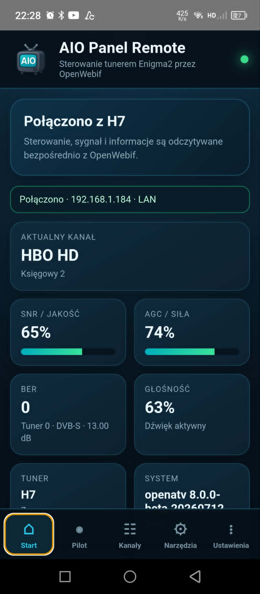
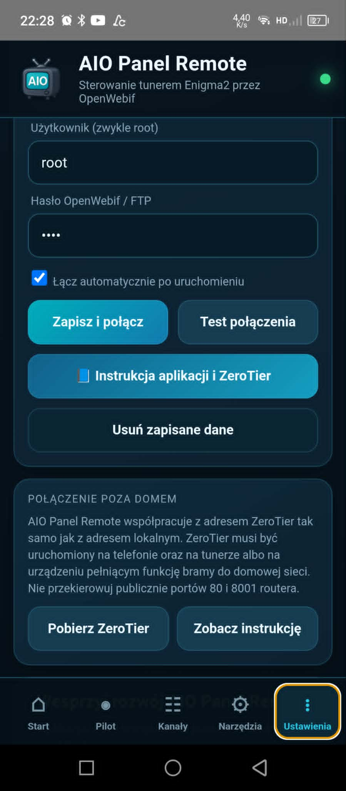
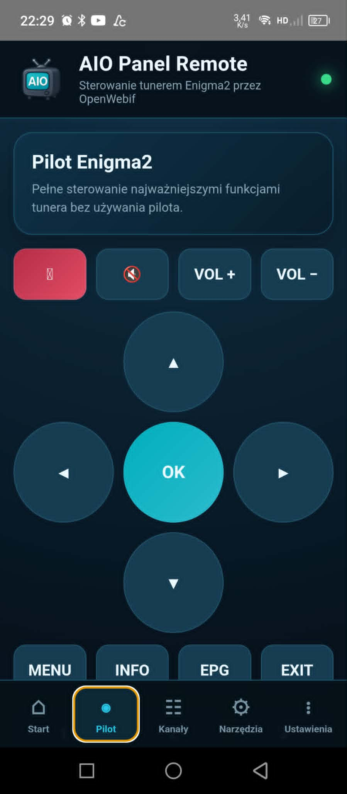
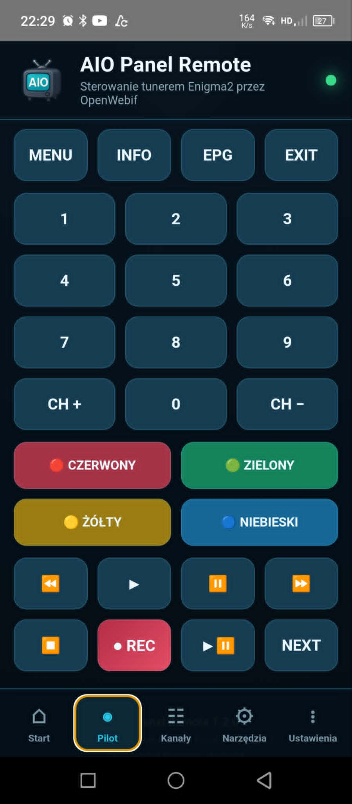
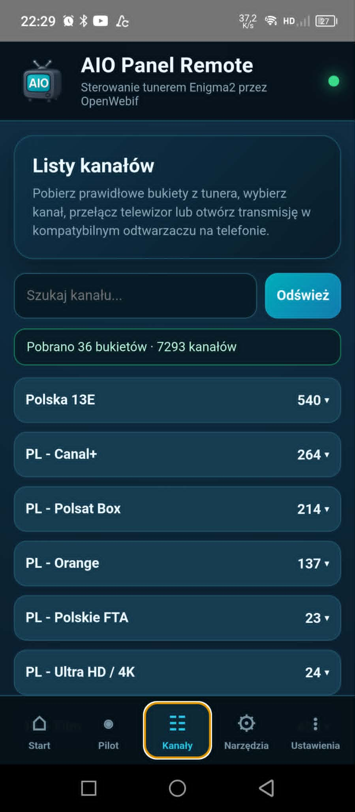
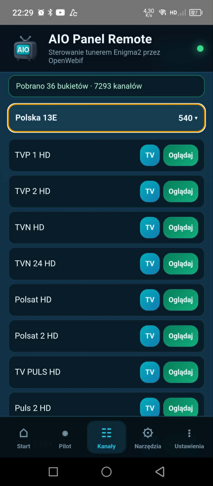
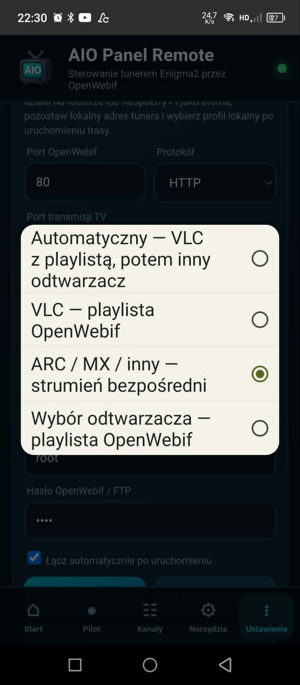
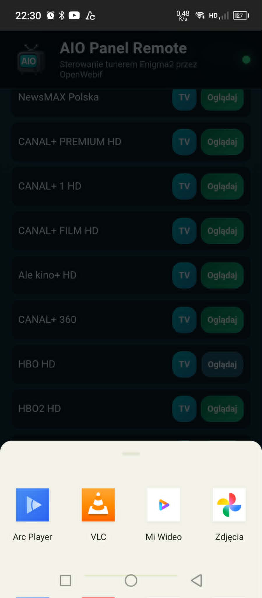
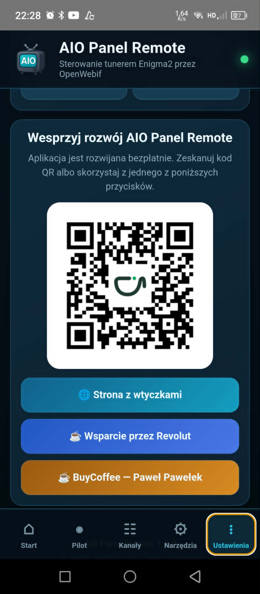
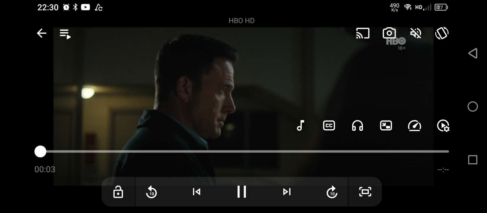

Nowa aplikacja Paweł Pawełek
Android • Enigma2 • OpenWebif • ZeroTier
📱 AIO Panel Remote 1.2.0
Sterowanie tunerem Enigma2 z telefonu w sieci lokalnej i poza domem przez ZeroTier. Pełny pilot, bukiety, kanały, podgląd parametrów tunera i odtwarzanie telewizji na Androidzie.

Pliki do pobrania
Oficjalne pliki autora: pobieraj APK wyłącznie z tej strony lub innej oficjalnej publikacji wskazanej przez autora. Kolejne wersje aplikacji instaluj na dotychczasowej wersji, o ile przy danym wydaniu nie zostanie podana inna instrukcja.
Co umożliwia aplikacja?
- pełny pilot ekranowy z kierunkami, OK, cyframi, kolorami i multimediami
- przełączanie kanałów i przeglądanie bukietów pobranych z tunera
- wyszukiwanie kanałów oraz przyciski TV i Oglądaj
- oglądanie kanałów przez ARC Player, VLC, MX Player lub inny odtwarzacz
- podgląd bieżącego kanału, audycji, głośności, modelu i systemu tunera
- odczyt parametrów SNR, AGC, BER i aktywnej głowicy
Sterowanie i narzędzia
- regulacja głośności i wyciszenie
- czuwanie, wybudzanie, restart GUI i restart całego tunera
- wysyłanie wiadomości na ekran telewizora
- profile połączenia dla sieci lokalnej i ZeroTier
- test połączenia i automatyczne łączenie po uruchomieniu
- instrukcja aplikacji i ZeroTier dostępna także wewnątrz programu
⚠️ Instalacja APK i komunikat Google Play Protect
Aplikacja jest instalowana bezpośrednio z pliku APK i nie została opublikowana w sklepie Google Play. Na części urządzeń Play Protect informuje również, że pakiet został przygotowany dla starszej wersji Androida i nie uwzględnia wszystkich najnowszych ustawień ochrony prywatności. Taki komunikat jest ostrzeżeniem o pochodzeniu i zgodności pakietu — sam w sobie nie przesądza o wykryciu złośliwego oprogramowania.
- Pobierz plik
AIO_Panel_Remote_1.2.0.apkz oficjalnej strony. - Otwórz plik w przeglądarce lub aplikacji Pliki i wybierz Zainstaluj.
- Gdy pojawi się ekran Play Protect, wybierz Więcej szczegółów.
- Następnie wybierz Zainstaluj mimo to.
- Nie ma potrzeby całkowitego wyłączania Google Play Protect.
📡 Wymagane ustawienia OpenWebif
AIO Panel Remote komunikuje się z tunerem przez standardowy interfejs OpenWebif. Na tunerze sprawdź następujące ustawienia:
| Ustawienie | Zalecana wartość |
|---|---|
| OpenWebif | Włączony |
| Port HTTP | 80 |
| Port strumieniowania TV | 8001 |
| Uwierzytelnianie | Zgodnie z własną konfiguracją; poza domem użyj hasła |
| Adres tunera | Adres lokalny, np. 192.168.1.184, lub adres dostępny przez ZeroTier |
W aplikacji otwórz Ustawienia, wpisz adres IP tunera, porty, użytkownika root i hasło, jeżeli jest wymagane. Następnie wykonaj Test połączenia i wybierz Zapisz i połącz.
📺 Oglądanie kanałów na telefonie
Przy każdym kanale dostępne są dwa działania:
- TV — przełącza kanał na tunerze.
- Oglądaj — uruchamia transmisję w wybranym odtwarzaczu na telefonie.
Najpewniejsza kolejność to najpierw nacisnąć TV, poczekać na przełączenie tunera, a następnie wybrać Oglądaj. Jest to szczególnie ważne przy jednej głowicy lub kanale z innego transpondera.
Tryby odtwarzania
- Automatyczny — VLC z playlistą, a następnie inny odtwarzacz.
- VLC — playlista OpenWebif.
- ARC / MX / inny — bezpośredni strumień z portu 8001.
- Wybór odtwarzacza — Android pokazuje zgodne aplikacje.
Jeżeli VLC nie pokazuje obrazu, wybierz tryb ARC / MX / inny — strumień bezpośredni. W testach ARC Player poprawnie odtwarzał kanały, z którymi VLC miał problem.
🌐 Działanie poza domem przez ZeroTier
Aplikacja obsługuje osobny profil połączenia przez ZeroTier. Prywatna sieć umożliwia połączenie z tunerem poza domem bez publicznego wystawiania OpenWebif.
- Zainstaluj ZeroTier na telefonie i dołącz urządzenie do własnej sieci ZeroTier.
- Uruchom ZeroTier na tunerze albo na routerze, Raspberry Pi lub komputerze pełniącym funkcję bramy do sieci domowej.
- Zatwierdź urządzenia w panelu ZeroTier.
- W AIO Panel Remote wybierz profil ZeroTier i wpisz adres ZeroTier tunera albo adres lokalny osiągalny przez skonfigurowaną trasę.
- Dla dostępu spoza domu włącz hasło OpenWebif.
Galeria AIO Panel Remote 1.2.0









Wymagania i ważne informacje
- smartfon lub tablet z Androidem
- tuner Enigma2 z uruchomionym OpenWebif
- ta sama sieć LAN/Wi-Fi albo skonfigurowana sieć ZeroTier
- odtwarzacz obsługujący MPEG-TS lub playlistę M3U
- kanał musi poprawnie dekodować się na tunerze
- przy oglądaniu potrzebna jest dostępna głowica
- 4K/HEVC i wysoki bitrate mogą nie działać na każdym telefonie
- jakość poza domem zależy od wysyłania Internetu i połączenia ZeroTier
Wersja: 1.2.0
Platforma: Android + Enigma2 + OpenWebif
Autor: by Paweł Pawełek
Kontakt: aio-iptv@wp.pl
Wszystkie problemy, uwagi i propozycje kolejnych funkcji proszę zgłaszać autorowi.